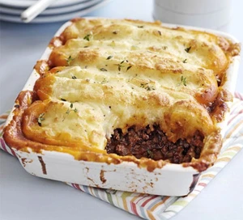

Cottage Pie

Description
This recipe is a classic Quebec recipe known as "Paté Chinois".
It is an incredibly simple recipe even beginner cooks make it.
Ingredients
- Potatoes
- Ground beef
- Cream corn
- Milk
Steps
- Wash, Peel and add the potatoes to boiling water
- Add oil to a hot pan and cook the ground beef. Season to taste and set aside.
- The potatoes should be ready, drain and mash them with butter and